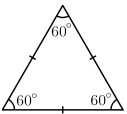

Триъгълник
Триъгълникът е една от основните фигури в геометрията. Представлява
двуизмерна фигура, многоъгълник с три страни и три ъгъла. Може да се
дефинира и като част от равнината, ограничена от три точки,
нележащи
на една права, и трите отсечки, съединяващи тези точки.
Видове триъгълници
В зависимост от своите страни триъгълникът може да бъде равностранен,
равнобедрен и разностранен, а в зависимост от своите ъгли –
правоъгълен,
тъпоъгълен и остроъгълен.
- Видове триъгълници в зависимост от страните:
- равностранен триъгълник (Фиг.1)- когато дължините
на
трите
страни са равни. В
равностранните триъгълници ъглите също са равни (всеки
от тях е 60°);
- равнобедрен триъгълник (Фиг.2) - когато дължините
на две
от
страните са равни.
Двете равни страни се наричат бедра, а третата - основа.
Този триъгълник
има 2 равни ъгъла при основата;
- разностранен триъгълник(Фиг.3) - когато всичките
му
страни са с
различни
дължини. Този триъгълник има три различни ъгъла.
|  |
 |
 |
| Фиг.1 |
Фиг.2 |
Фиг.3 |
- Видове триъгълници в зависимост от ъглиге - според
големината на
най-големия си вътрешен ъгъл, триъгълникът може да бъде:
- правоъгълен триъгълник - триъгълник, който има
един
прав ъгъл (равен
на 90⁰) и два остри ъгъла. Страната, срещулежаща на
правия ъгъл, се
нарича хипотенуза и е най-дългата страна във всеки
правоъгълен
триъгълник. Другите две страни се наричат катети;
- тъпоъгълен триъгълник - триъгълник, който има
един тъп
ъгъл (по-голям
от 90⁰) и два остри ъгъла;
- остроъгълен триъгълник - триъгълник, при който
всички
вътрешни ъгли са
по-малки от 90°.